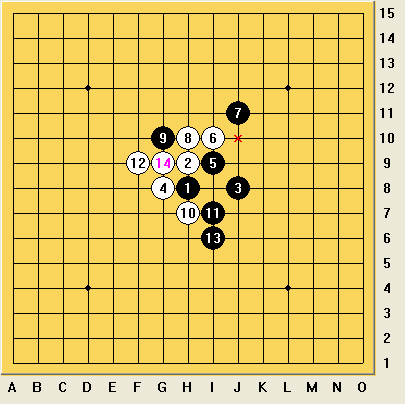
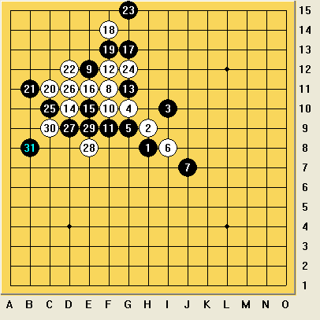
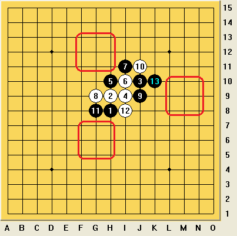
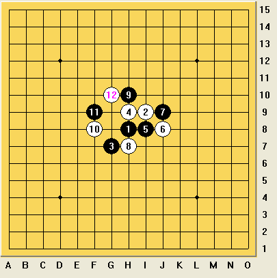
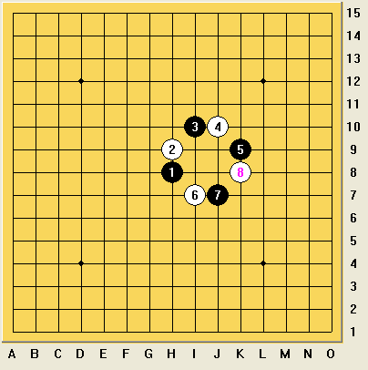
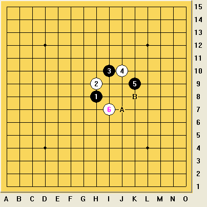

如何计算
#1 如何计算 作者：屏蔽 发表时间：2013-8-16 11:04:48
原文载于我的百度空间【复平面】
http://hi.baidu.com/arbil1989/item/c9694f3bc713ddc02f8ec20b
====================
近日有朋友问起“如何计算”这个问题。我开始觉得这个词太过泛泛，不好回答，但后来发现做一些概括性的描述以表达“计算的过程”还是可行的。开始还想过“如何分析局面”、“如何走一步棋”之类的标题，但后来发现还是“如何计算”最为贴切。我理解这里的计算并不是指单纯的VCT之类，而是对局面做一个整体的评估、分析、决策直至落子这一概念。
我认为计算的过程分为：形势获取、思路选择、区域搜索、落点决策，共四个阶段。本文对这四个阶段介绍了作者自己的经验，但并不涉及具体处理这些阶段的技巧。
1、形势获取与思路选择
局面的形势在一个节点上是客观存在的、固定的，最重要的是，对于完全公开的棋类对弈来说，对于对局双方是相同的，这为我们从对手的角度思考形势提供了巨大的支持。相比较而言，在大多数牌类游戏中，有一部分信息（比如手牌、底牌等）被以不同的方式隐蔽了，并且这些信息是决定形势变化的关键信息，因此在大多数情况下，牌类游戏的决策往往更具有随机性和开放性，不同的人对于局面的形势有着根本性不同的判断，与棋类游戏的差别也在于此。因此，这里谈及的形势应该是最基本的形势，尽管有“看错了”、“没看清楚”等这样光学上、物理上的理由存在，但总体而言，无论选手的水平、经验有如何的差异，不同选手对于形势的获取应该是一致的。
为什么我要把形势获取和思路选择两个步骤归结到一起呢？这是因为，尽管形势获取的稳定性给我们提供了后续思考的一个坚实基础，但这个基础的直接作用并不大，需要我们的思路将其进行处理和转化。为什么这么说呢？要知道，“黑棋在左边很多，分别位于哪里哪里位置，白棋在右边很多，分别在哪里哪里位置”这样的形势获取是非常抽象的，就算是不会下棋的人也能做出这样的判断，而人类认识事物的过程，从历史的观点来看，必定会处理成自己便于理解的形式。另一个重要的原因是，形势获取对于双方选手的一致性，这种“共识”在以“分出胜负”为目的的博弈中并没有起到什么关键的推动作用。
也正是基于上述理由，形势获取与思路选择虽然是两个步骤，但往往是紧密结合、不可分割的。从思路选择这一步骤开始，棋手的计算力、定式、棋感，包括对局经验将发挥巨大的作用，也是选手的实力开始体现以及体现出差异的阶段。


以上两图为例：金星定式中，白棋做出恐怖形状，看来已经胜券在握，这时如果黑方迫于压力，可能会选择防守的思路，并开始进一步检查是否还有可行的防点；又或者没有轻易放弃先手，而寻求反先的思路（这也是本定式的正解）；又或者由于计算力不足，根本没有看到白棋的VCF，直接开始考虑黑棋的进攻，也都是很可能的。在溪月变化中，黑棋一路走对正确防御，白棋面临黑棋在右侧、右下、下方的广阔空间优势，此时直接进行空间上的防御的思路也算常规，但在我的一盘实战中，白棋成功利用黑棋没有先手的缺点，使用左上的优势过渡，在局部展开猛攻，消耗了我大半的优势，最终和棋，显然白棋的优势不足以在任何位置取胜，但以攻为守的思路却是相当重要的。
需要格外关注的一点是，思路的选择虽说要随机应变，但维持其稳定性也是相当重要的。以攻击为主线的思路和以防守为主线的思路往往具有较强的不兼容性质，我见过许多棋手，进攻非常良好，或者防御非常坚实，给对手很大的压力，但却常常输在攻守转化的过程中，一旦进攻或防守完毕，就迅速下出弱手速败，哪怕局面非常平稳也是如此。思路的转换一定要选好时机、慎之又慎，这也是为什么一些中性的、攻守兼备的思路备受推崇的原因，因为攻守兼备，所以向暴力进攻或完全防御转化的过程也较为圆润、顺利。
2、区域搜索
在行棋的过程中，即便我们真的不清楚该如何选点，我们也不需要对棋盘上一二百个选点一一进行思考，无论是出于节省体力还是节省时间的目的，提高计算的效率都是很有必要的，因此在合理的思路选择的基础上，确定一个区域进行进一步的计算是很重要的。一般来说，一个给定的思路并不会确定过多的思考区域进行搜索（甚至经常只有一个明显的区域！），但也有例外，如下图所示：



比如疏星的变化，白棋在三个方向都有较强的联络，即便排除单独选择某个方向的进攻，盘面上至少还有三个区域供三个主要方向之间进行两两联络。至于斜月、溪月变化这种全盘稳定的情况，区域搜索的内涵就更加广泛了。
区域搜索需要有一个合适的体量，个人经验认为区域包含的点位不宜超过10个，多于这个数字时，一反面会导致区域内选点的个体差异较大，难以统一思考，另一方面由于选点过多，在后续会产生计算效率的下降。由于区域较大，建议对区域进行进一步划分之后，对较小的区域再做出选择。
还有需要提醒的一点是，区域内的点往往较为靠近，性质也有相似之处，但绝不是较为靠近的点就可以划分到同一区域中去，比如下图中的A、B两点虽然相邻，但性质上却有巨大的差异，不可能一概而论，绝不能将此处的“区域”理解为几何上的一个比较规则的图形。

3、落点决策
这是计算和行棋的最终阶段，因为无论你如何思考，你最终都是要落“一个”棋子的。在区域确定之后，之前的基础都已经比较稳定，接下来就要对不超过10个点进行逐一的计算了，由于已经进入最终的阶段，这些计算务必力求准确，并与之前的思路和区域选择和谐一致。这一阶段也是计算力重要性比重最大、最考验选手计算力的阶段，在一些激烈的局面下，就算能对思路和区域有清醒地判断，也没人能保证自己不会出现计算力不足或误算的情况，由此而产生胜与不胜的差异甚至胜与败的差异都是很正常的。这一阶段和我们通常所说的“计算”概念最为接近，也正因为这个原因，很多棋手产生了误解，在计算局面时会直接进入这个最终阶段——基础不稳的后果可想而知，计算力的优势无法得到发挥，低效的甚至方向错误的强大计算力反而会拖了后腿。
上文对我所理解的计算过程做了一个全面的描述，虽然四步骤的描写看来简单明了，一气呵成，但实际应用却远非这么简单，我们经常会遇到两种情况，即“重复”和“省略”。比如第1部分中金星的变化，黑方经过深入计算，发现在左边已经没有直接的防点了，这时如何处理？——返回区域搜索阶段，是否我们的区域选择错误或者疏漏？是否在我们忽略的某个位置还存在防点？是否——“防御”这一思路本身就有问题？是否还有其他的思路？这种倒推式的重复修正方案在局面激烈时常常会发生，其几何式增长的复杂程度也产生了选手计算时的巨大精神压力。而在另一些情况下，比如第2部分中斜月的变化，在最终的落点决策阶段，反而不用低效率地投入大量的计算精力，在确定了落点区域之后，根据一些基本的棋理选定走法即可；当你进入VCT的最终阶段时，思路选择甚至区域搜索也几乎可以忽略了，只需要根据精确的计算确认每一手的落子位置即可。这些问题希望各位读者牢记。
［ 小红眼镜同学于 2013-8-16 11:50:01 时花20金币送鲜花一朵］
［ 小红眼镜同学于 2013-8-16 11:50:01 时花20金币送鲜花一朵］
［ 暮雨迟同学于 2013-8-16 12:41:52 时花20金币送鲜花一朵］
［ 潇洒 于 2013-8-16 14:44:44 时奖励此帖[金币加 100 威望加1］
［ 踵酃同学于 2013-8-16 22:34:46 时花20金币送鲜花一朵］
#2 Re:如何计算 作者：我菜菜 发表时间：2013-8-16 11:39:04
顶，文采技术都一流的好文。#3 Re:如何计算 作者：冰雪笑醉 发表时间：2013-8-16 12:13:30
首先，“看错了”、“没看清楚”用心理上的无意识选择性失明更贴切点。
其次，整个过程包含信息的输入，信息处理，以及决策与输出；只是，信息的反馈在哪？ 由于五子棋的特性，可将信息的反馈视为计算结论与思路预期的不符（拆棋的话则是验算选点时发现软件结论与思路预期不符）
形势、思路——区域——验算!如果验算满意转为决策输出，如果验算不满意则要信息反馈，调整区域，甚至调整思路，重新审视局势。
比如感觉有杀，结果有唯一防，信息反馈可能导致整个形势思路的推翻重来，并根据验算结果 重新拟定新的策略，是漏杀重算还是战略撤退等等
当然，有唯一防的情况可能只是简单的移形换位、这时只需调整选点；也可能是次序问题，需要调整搜索区域。 根据验算情况建立合理高效准确的反馈方式才是关键。
再次，思路的确定可以大量运用反证、对比等技巧来减免信息反馈，急速提高计算效率。比如选择进攻策略直接导入“先手确定程序”，只要确定先手归属是攻是防一目了然；比如选择扩大优势策略直接导入“子力差程序”，只要能保证自己一手或连续几手的选点效率高于对方就可以考虑，反之然；还有对方VCT的线路排除选点，最烦人的防点是否能杀等等方式。 虽然这些本质上属于技巧，但它们能部分减免某些计算流程，非常非常适合人脑思维习惯。（严谨完美的计算流程更适合软件）
最后，虽然计算流程引入合理的信息反馈制度会使计算流程更实用，但势必导致难以掌握，要在人脑中自然而然建立这样的计算程序比软件编程难得多，如何编写就成问题。 而且人脑有很多天生的缺陷会妨碍程序的执行，比如思维惰性（懒得验算），选点风格的偏好（有人觉得堵心理舒服、有人觉得进攻心理舒服、有人觉得空间感舒服等等），无意识的选择性失明（无意识地忽略掉自己不喜欢的点或思路），一厢情愿（按自己意愿评估对方选点），习惯性的跳跃思维（跟着感觉跳着走，按程序走反而大脑死机）。
这些都会导致 计算流程的缺陷崩溃，当然我相信理科、严谨型性格的人容易接受这样的计算流程；同时我感觉不同性格的人可能有不同的计算方式，而且不少方式很可能是无意识的——当事人可能得到结论但却说不出结论如何得到，并将思路推为棋感或棋型的熟悉等。
［ 暮雨迟同学于 2013-8-16 12:42:18 时花20金币送鲜花一朵］
#4 Re:如何计算 作者：冰雪笑醉 发表时间：2013-8-16 12:19:27
一般情况下，思路的确定是会导入区域的搜索，但一些思路的计算程序已经比较成熟，最典型的就是先手，通过先手的确定可以节省很多正常步骤。这对人脑计算是有非常重要的实际操作性意义的，当然对软件而言，还是越严谨全面越好。
#5 Re:如何计算 作者：小帮帮 发表时间：2013-8-16 12:46:42
很不错的文章，不过对初级、中级阶段的棋手，理解起来不知道会不会有一定难度。#6 Re:如何计算 作者：夏至 发表时间：2013-8-16 18:00:15
正需要这类如何计算的答疑~~~顶起。#7 Re:如何计算 作者：怪 发表时间：2013-8-18 16:02:08
不明觉厉阿阿#8 Re:如何计算 作者：的得 发表时间：2013-8-18 23:56:53
左右脑配合，计算一种变化然后记住，在计算下一种变化，再记住。。。。然后根据个人能力选择终止，从已记住的变化中评估、抽象出可以接受的局面，然后选择落子